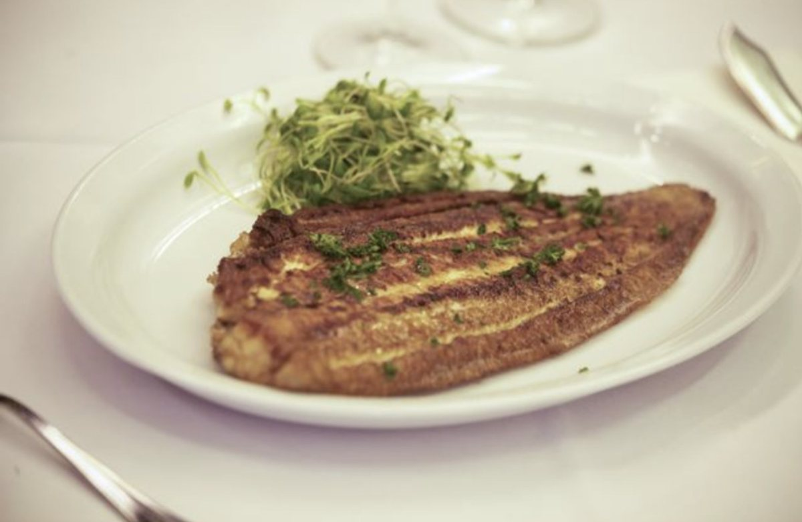
| 営業時間 | 水〜金 12:00〜22:00／土 17:00〜22:00（夜のみ）／日 12:00〜22:00 |
|---|---|
| 定休日 | 月曜・火曜 |
| 住所 | Amerikalei 6, 2000 Antwerpen |
| 予約 | 推奨 — ☎ +32 3 238 11 47 ／ 公式サイト |
| 乳児連れ | ベビーカー入店 未確認／ハイチェア 未確認／おむつ替え台 未確認 |
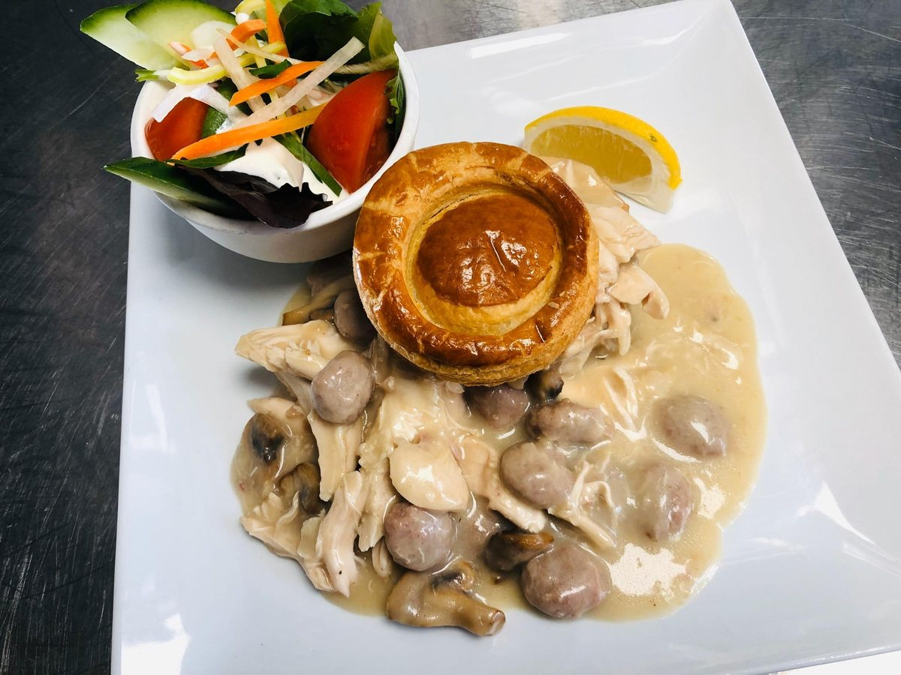
| 営業時間 | 月〜金 12:00〜14:30／17:30〜22:00・土 12:00〜22:00（通し）・日は毎月第1日曜（ショッピングサンデー）のみ 12:00〜18:30 |
|---|---|
| 定休日 | 日曜（第1日曜を除く）・祝日 |
| 住所 | Armeduivelstraat 1, 2000 Antwerpen |
| 予約 | 要 — ☎ +32 3 232 26 98 ／ 公式サイト ／ 予約サイト |
| 乳児連れ | ベビーカー入店 未確認／ハイチェア 未確認／おむつ替え台 未確認 |
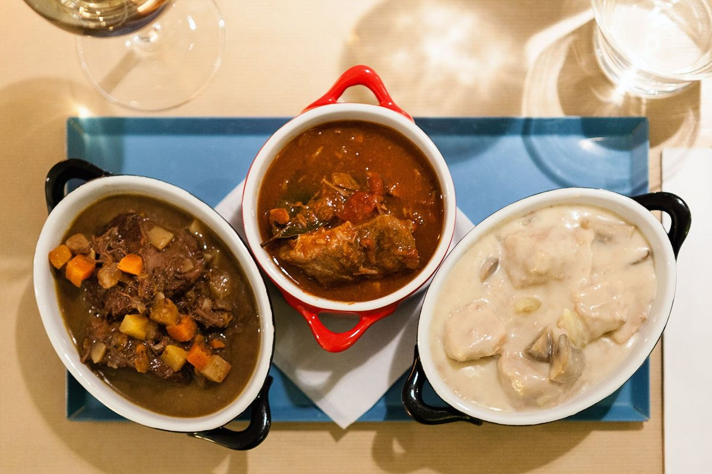
| 営業時間 | 水〜日 12:00〜21:30（通し） |
|---|---|
| 定休日 | 月曜・火曜（2027年2月3日〜14日は年次休暇） |
| 住所 | Willem Ogierplaats 3, 2000 Antwerpen |
| 予約 | 推奨 — ☎ +32 3 773 32 01 ／ 公式サイト ／ 予約サイト |
| 乳児連れ | ベビーカー入店 未確認／ハイチェア 未確認／おむつ替え台 未確認 |
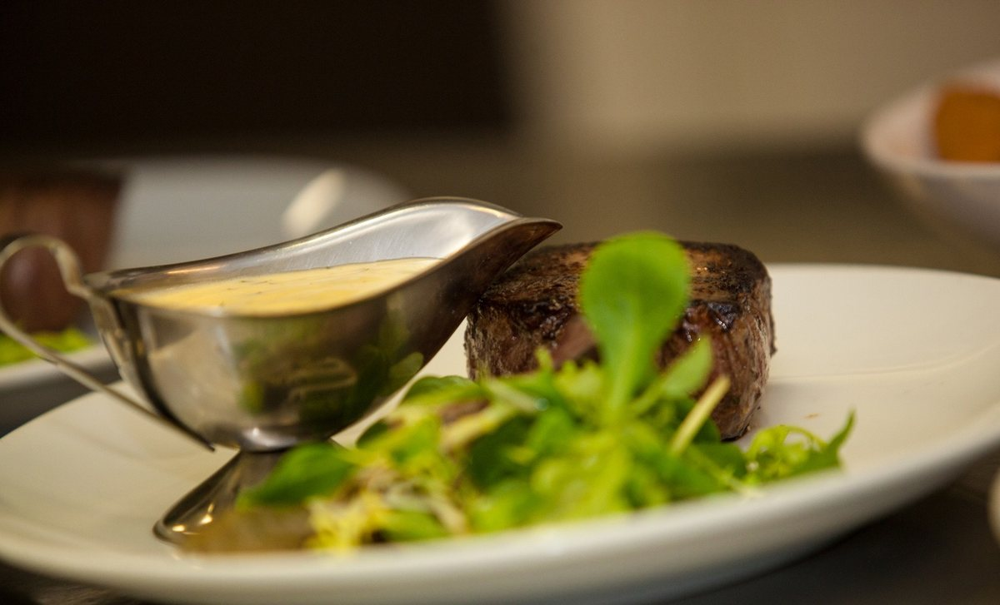
| 営業時間 | 厨房：火〜木 12:00〜15:00／18:00〜22:00・金土 12:00〜15:00／17:00〜22:00・日 12:00〜15:00／17:00〜21:00（カフェは火〜土 12:00〜23:30、日 12:00〜22:30） |
|---|---|
| 定休日 | 月曜 |
| 住所 | Braderijstraat 24, 2000 Antwerpen |
| 予約 | 推奨 — ☎ +32 3 232 52 44 ／ 公式サイト ／ 予約サイト |
| 乳児連れ | ベビーカー入店 未確認／ハイチェア 未確認／おむつ替え台 未確認 |
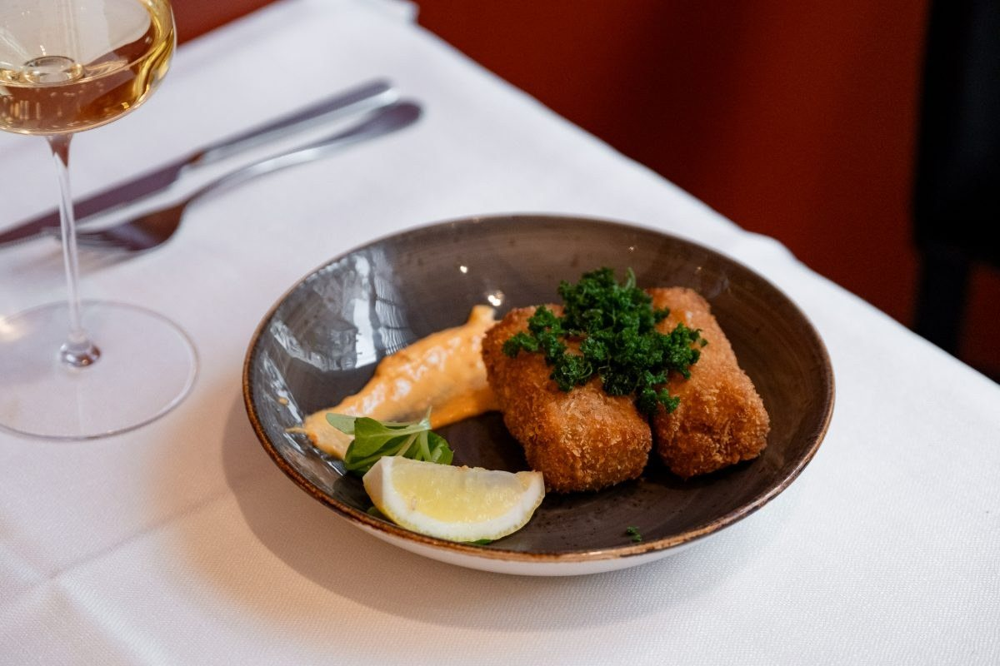
| 営業時間 | 12:00〜14:00／18:00〜21:30（月・火・金・土・日） |
|---|---|
| 定休日 | 水曜・木曜 |
| 住所 | Suikerrui 4, 2000 Antwerpen |
| 予約 | 推奨 — ☎ +32 3 233 07 58 ／ 公式サイト |
| 乳児連れ | ベビーカー入店 未確認／ハイチェア 未確認／おむつ替え台 未確認 |
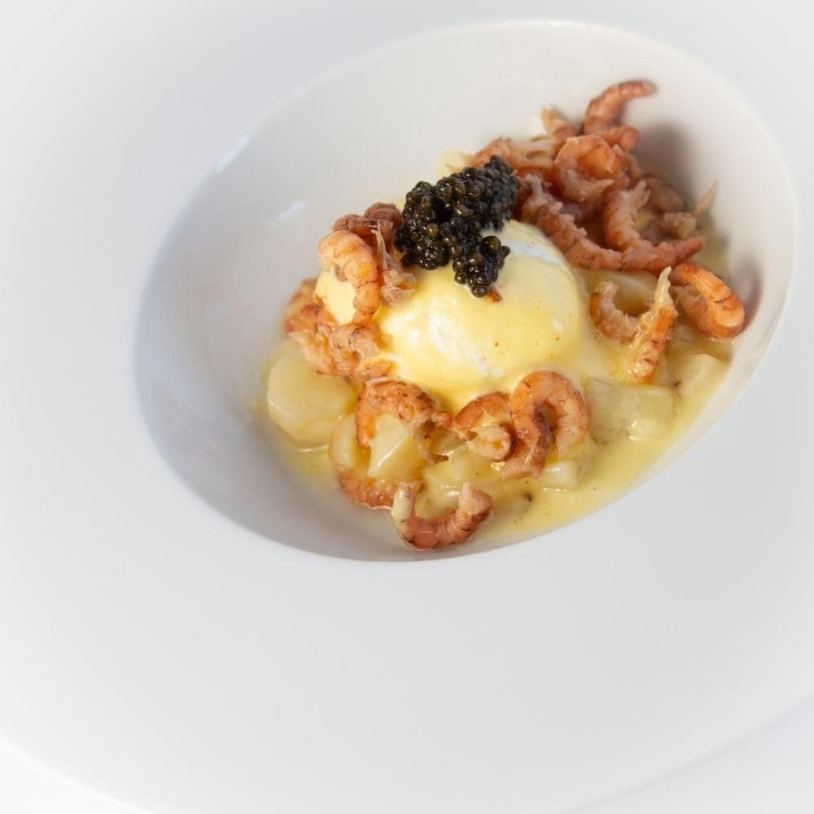
| 営業時間 | 毎日 11:30〜22:30（厨房） |
|---|---|
| 定休日 | なし（7日営業） |
| 住所 | Vlaamsekaai 16, 2000 Antwerpen |
| 予約 | 推奨 — ☎ +32 3 238 61 97 ／ 公式サイト ／ 予約サイト |
| 乳児連れ | ベビーカー入店 未確認／ハイチェア 未確認／おむつ替え台 未確認 |
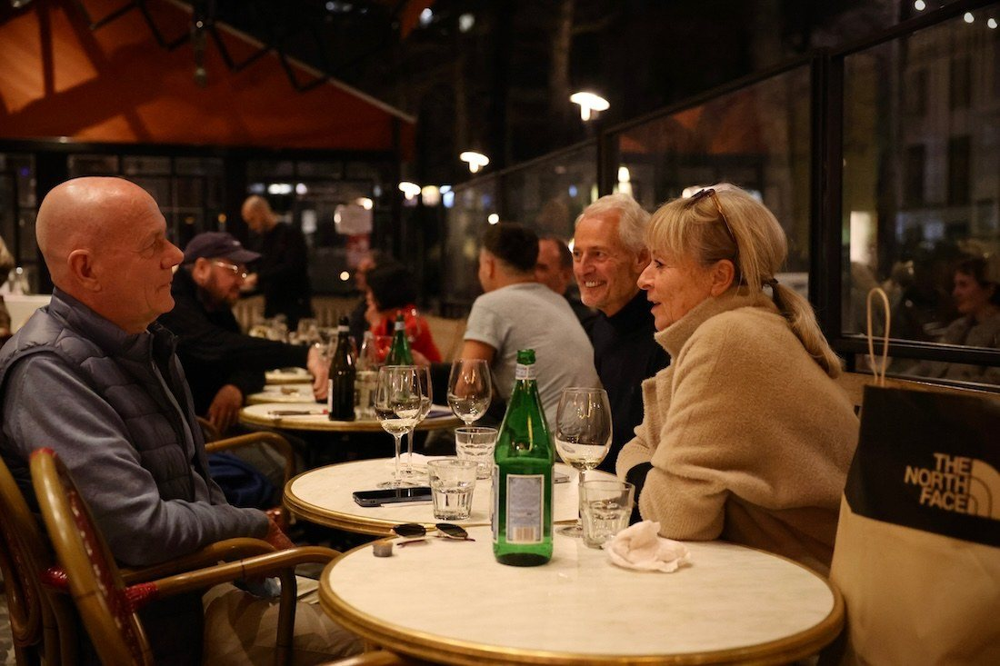
| 営業時間 | 月〜土 11:00〜23:00 |
|---|---|
| 定休日 | 日曜・祝日 |
| 住所 | Graanmarkt 7, 2000 Antwerpen |
| 予約 | 推奨 — ☎ +32 3 232 16 32 ／ 公式サイト ／ 予約サイト |
| 乳児連れ | ベビーカー入店 未確認／ハイチェア 未確認／おむつ替え台 未確認 |
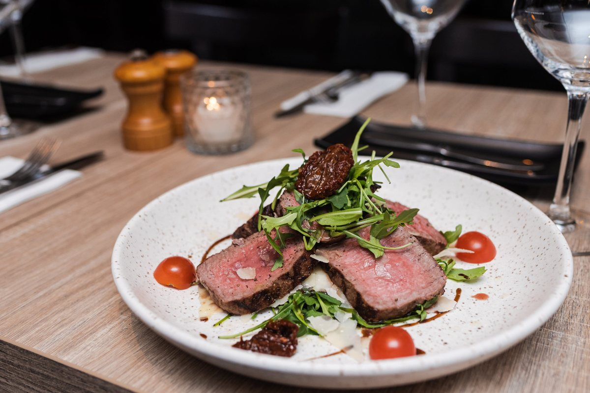
| 営業時間 | 水〜月 11:00〜22:00 |
|---|---|
| 定休日 | 火曜 |
| 住所 | Oude Koornmarkt 31, 2000 Antwerpen |
| 予約 | 推奨 — ☎ +32 3 213 22 15 ／ 公式サイト ／ 予約サイト |
| 乳児連れ | ベビーカー入店 未確認／ハイチェア 未確認／おむつ替え台 未確認 |
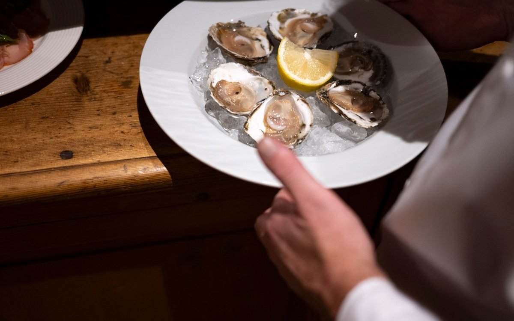
| 営業時間 | 火〜土 昼 12:00〜／夜 18:30〜 |
|---|---|
| 定休日 | 日曜・月曜 |
| 住所 | Oude Koornmarkt 16 (Vlaeykensgang), 2000 Antwerpen |
| 予約 | 要 — ☎ +32 3 231 61 70 ／ 公式サイト |
| 乳児連れ | ベビーカー入店 未確認／ハイチェア 未確認／おむつ替え台 未確認 |
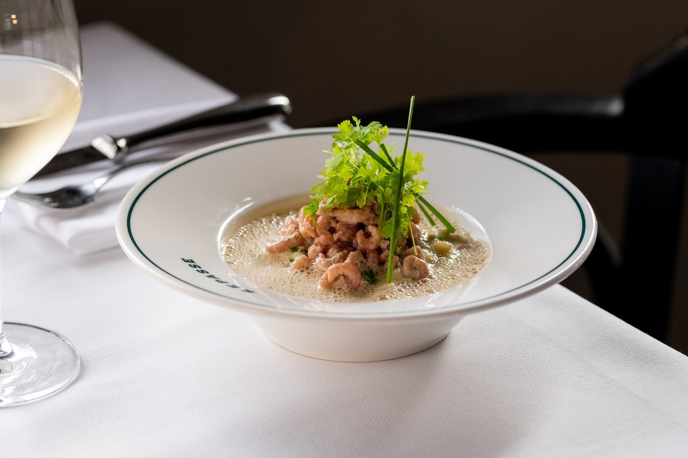
| 営業時間 | 水〜金 12:00〜14:00／18:00〜22:00・土 18:00〜22:00・日 13:00〜21:00 |
|---|---|
| 定休日 | 月曜・火曜 |
| 住所 | Boomgaardstraat 5, 2018 Antwerpen |
| 予約 | 推奨 — ☎ +32 472 54 11 57 ／ 公式サイト |
| 乳児連れ | ベビーカー入店 未確認／ハイチェア 未確認／おむつ替え台 未確認 |
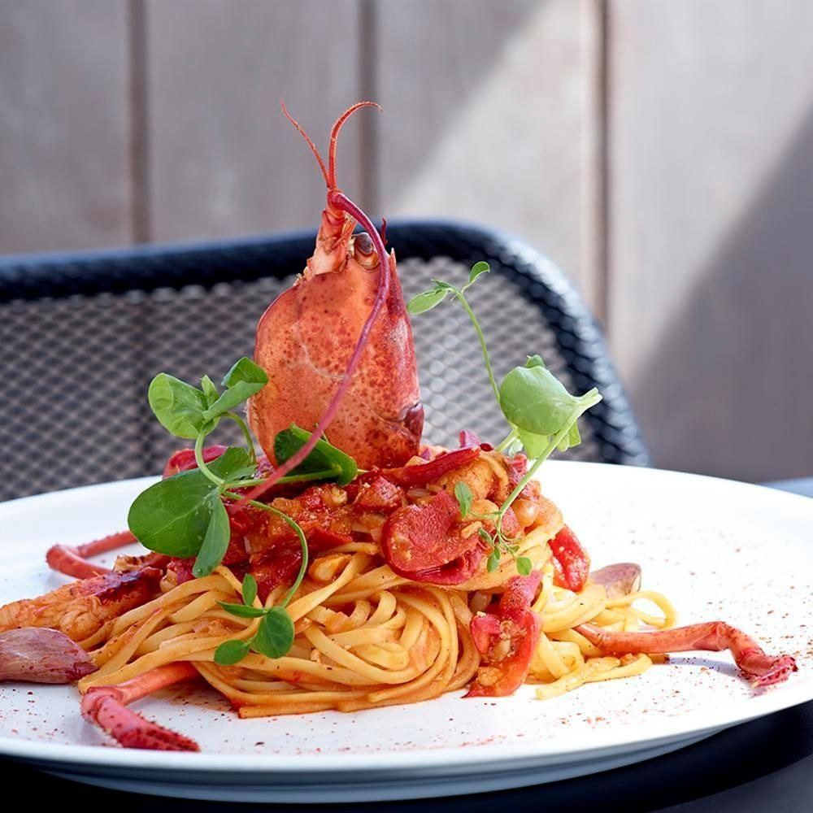
| 営業時間 | 毎日 昼 11:00〜15:00／夜 17:00〜22:00 |
|---|---|
| 定休日 | 12月24日・1月1日 |
| 住所 | Ernest Van Dijckkaai 37, 2000 Antwerpen |
| 予約 | 推奨 — ☎ +32 3 234 12 75 ／ 公式サイト |
| 乳児連れ | ベビーカー入店 未確認／ハイチェア 未確認／おむつ替え台 未確認 |
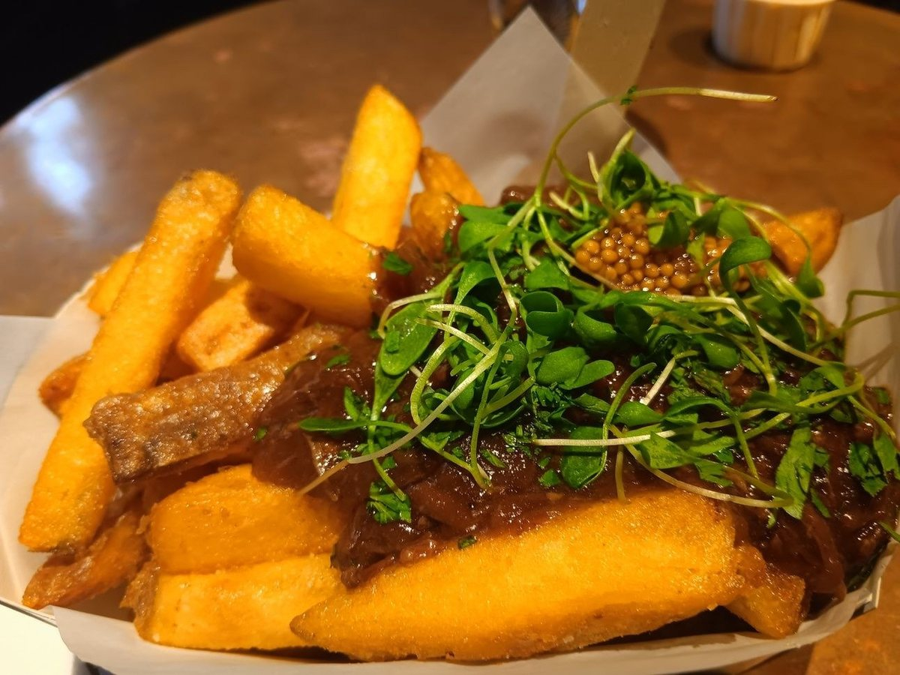
| 営業時間 | 月〜日 11:30〜20:00（公式サイト。営業時間ポータルでは〜21:00表記あり） |
|---|---|
| 定休日 | なし（無休） |
| 住所 | Korte Gasthuisstraat 32, 2000 Antwerpen |
| 予約 | 不要 — ☎ +31 858 769 838（公式サイト記載の番号） ／ 公式サイト |
| 乳児連れ | ベビーカー入店 未確認／ハイチェア 未確認／おむつ替え台 未確認 |
| 営業時間 | 日〜木 10:00〜翌3:00／金・土 10:00〜翌6:00（InTravel掲載。公式Instagramは『毎日営業』） |
|---|---|
| 定休日 | なし（毎日営業） |
| 住所 | Hoogstraat 1, 2000 Antwerpen |
| 予約 | 不可 — ☎ +32 3 232 63 77 ／ 公式サイト |
| 乳児連れ | ベビーカー入店 未確認／ハイチェア 未確認／おむつ替え台 未確認 |
| 営業時間 | 月〜日 10:00〜18:00 |
|---|---|
| 定休日 | なし（無休） |
| 住所 | Schrijnwerkersstraat 16, 2000 Antwerpen |
| 予約 | 不要 — ☎ +32 3 233 62 26 ／ 公式サイト |
| 乳児連れ | ベビーカー入店 未確認／ハイチェア 未確認／おむつ替え台 未確認 |
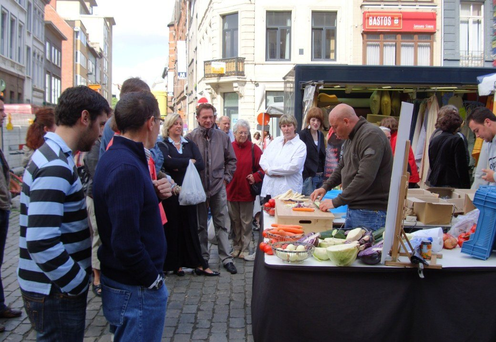
| 営業時間 | 毎週日曜 8:00〜13:00頃（夏季は14:00頃まで） |
|---|---|
| 定休日 | 月〜土（日曜のみ開催。祝日も開催） |
| 住所 | Theaterplein / Oudevaartplaats, 2000 Antwerpen |
| 予約 | 不要 |
| 乳児連れ | ベビーカー入店 未確認／ハイチェア 未確認／おむつ替え台 未確認 |
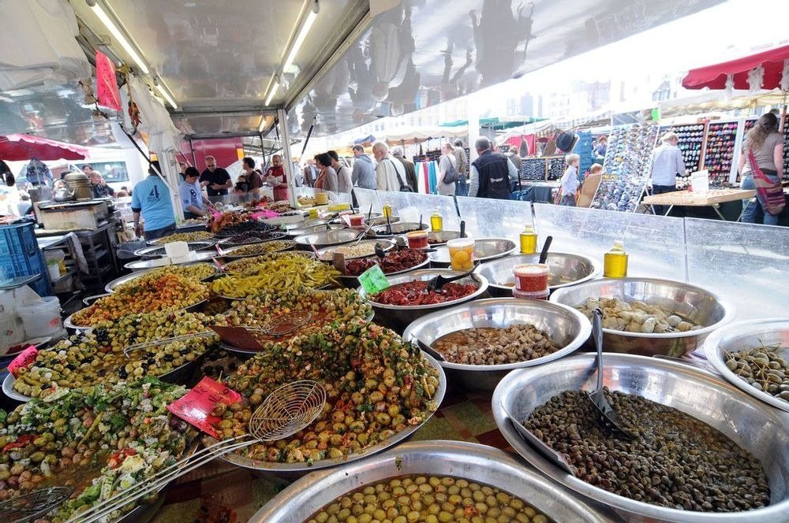
| 営業時間 | 毎週土曜 8:00〜16:00 |
|---|---|
| 定休日 | 日〜金（土曜のみ開催） |
| 住所 | Theaterplein / Oudevaartplaats, 2000 Antwerpen |
| 予約 | 不要 |
| 乳児連れ | ベビーカー入店 未確認／ハイチェア 未確認／おむつ替え台 未確認 |
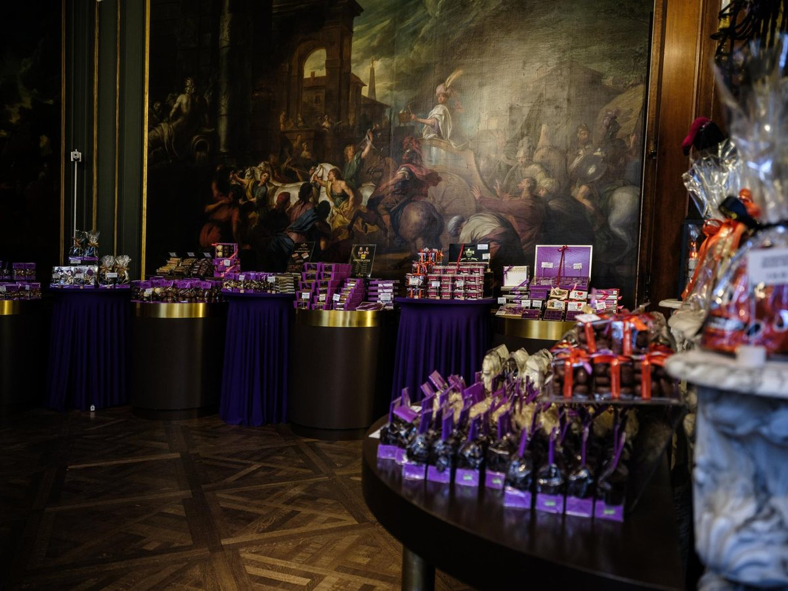
| 営業時間 | 火〜土 9:30〜18:30／日・月 10:30〜18:30（土日とも営業） |
|---|---|
| 定休日 | なし（公式に定休日の記載なし。祝日は未確認） |
| 住所 | Paleis op de Meir, Meir 50, 2000 Antwerpen |
| 予約 | 不要 — ☎ +32 3 206 20 30 ／ 公式サイト |
| 乳児連れ | ベビーカー入店 未確認／ハイチェア 未確認／おむつ替え台 未確認 |
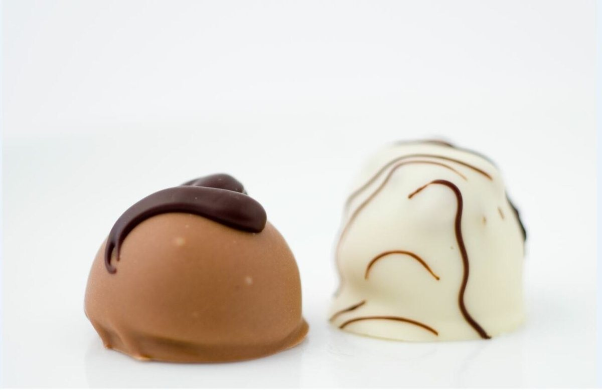
| 営業時間 | 火〜土 10:30〜18:00／日 13:00〜18:00 |
|---|---|
| 定休日 | 月曜 |
| 住所 | Steenhouwersvest 30, 2000 Antwerpen |
| 予約 | 不要 — ☎ +32 3 293 58 94 ／ 公式サイト |
| 乳児連れ | ベビーカー入店 未確認／ハイチェア 未確認／おむつ替え台 未確認 |
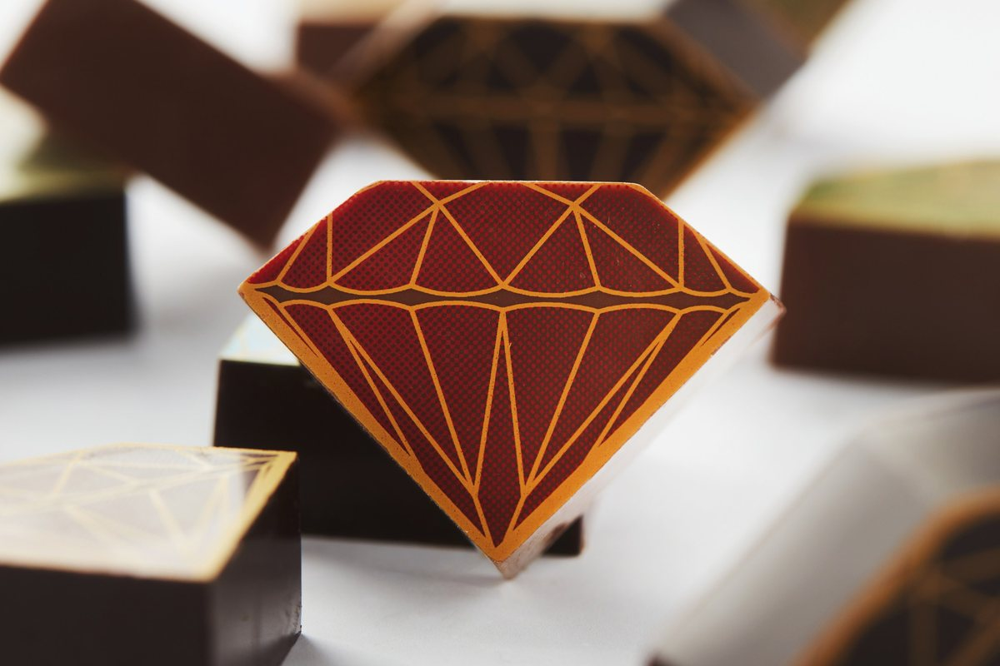
| 営業時間 | 月〜土 9:00〜18:00 |
|---|---|
| 定休日 | 日曜・祝日（土曜は営業、日曜は休み） |
| 住所 | Appelmansstraat 5, 2018 Antwerpen |
| 予約 | 不要 — ☎ +32 3 470 28 61 ／ 公式サイト |
| 乳児連れ | ベビーカー入店 未確認／ハイチェア 未確認／おむつ替え台 未確認 |
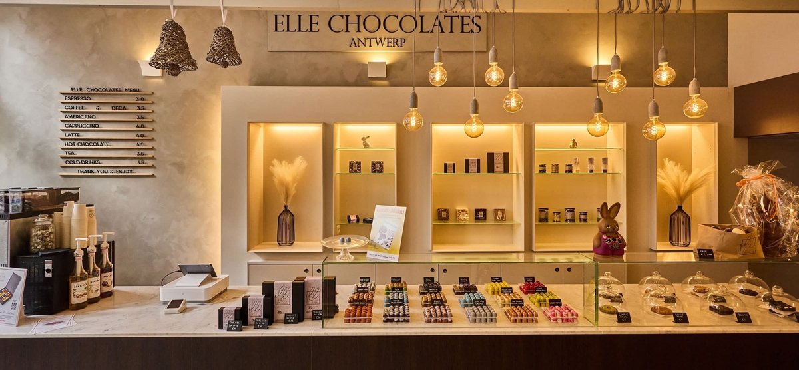
| 営業時間 | 月・水・金・土・日 12:00〜18:00（公式サイト）※G&Mは土日10:00〜18:00と記載 |
|---|---|
| 定休日 | 火曜・木曜（公式サイトの表記。G&Mは無休と記載し食い違いあり） |
| 住所 | Grote Markt 27, 2000 Antwerpen |
| 予約 | 不要 — ☎ +32 474 72 87 92 ／ 公式サイト |
| 乳児連れ | ベビーカー入店 未確認／ハイチェア 未確認／おむつ替え台 未確認 |
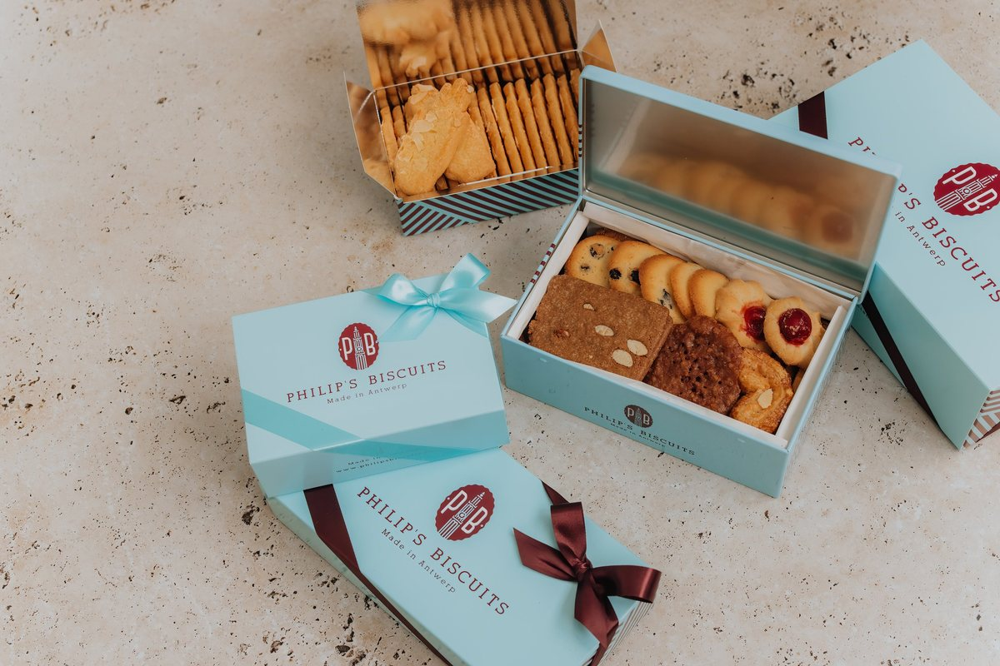
| 営業時間 | ホーフストラート店（Hoogstraat 2-4）：月〜日 10:00〜18:00／コルテ・ハストハイスストラート店（Korte Gasthuisstraat 39）：月〜土 10:00〜18:00、第1日曜のみ 12:00〜18:00 |
|---|---|
| 定休日 | ホーフストラート店は無休（1/1・12/25休）。コルテ・ハストハイスストラート店は日曜（第1日曜除く）・祝日 |
| 住所 | Hoogstraat 2-4, 2000 Antwerpen（日曜はこちら）／Korte Gasthuisstraat 39, 2000 Antwerpen |
| 予約 | 不要 — ☎ +32 3 321 92 83 ／ 公式サイト |
| 乳児連れ | ベビーカー入店 未確認／ハイチェア 未確認／おむつ替え台 未確認 |
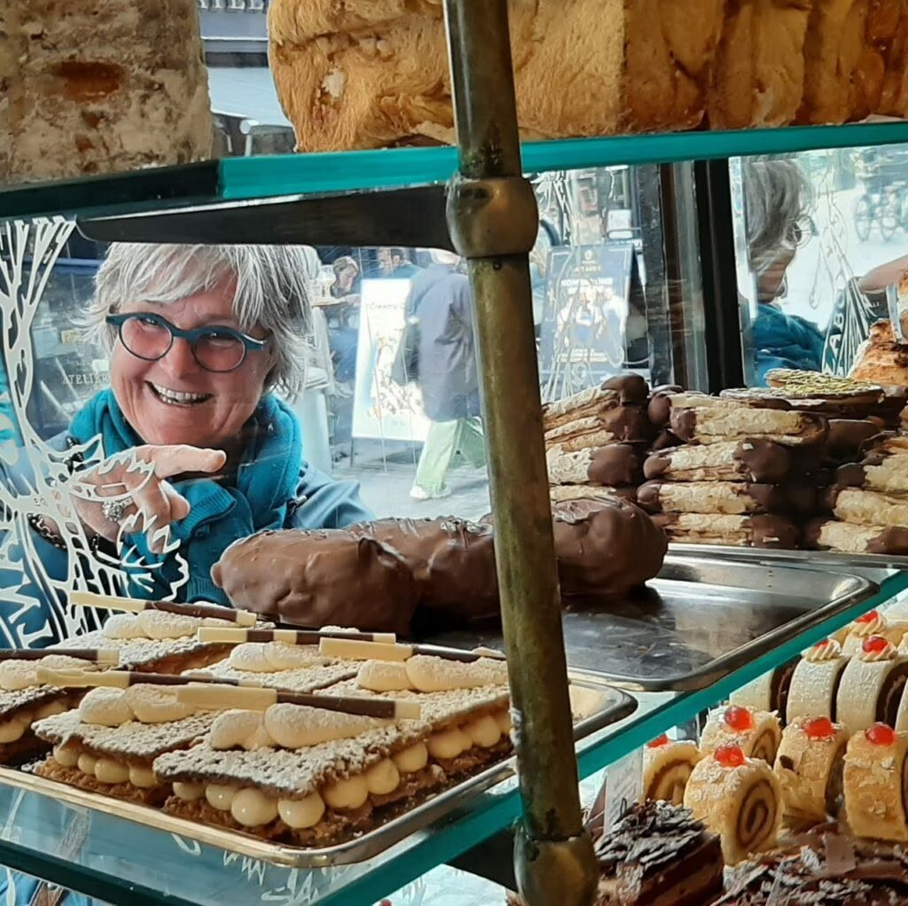
| 営業時間 | 火〜土 7:00〜19:00（Luc & June は 7:00〜18:00 と記載） |
|---|---|
| 定休日 | 日曜・月曜（土曜は営業、日曜は休み） |
| 住所 | Korte Gasthuisstraat 31, 2000 Antwerpen |
| 予約 | 不要 — ☎ +32 3 226 07 91 ／ 公式サイト |
| 乳児連れ | ベビーカー入店 未確認／ハイチェア 未確認／おむつ替え台 未確認 |
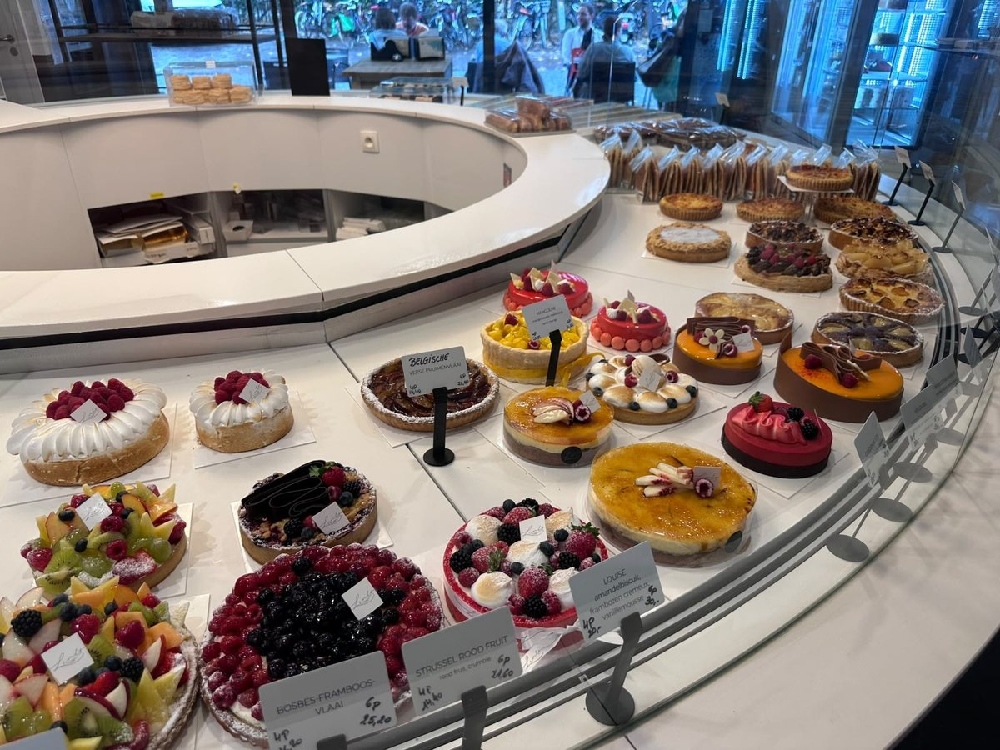
| 営業時間 | パティスリー：火〜土 7:00〜18:00／日・祝 7:00〜15:00。ティールーム：火〜土 7:30〜17:30（日曜休） |
|---|---|
| 定休日 | 月曜（ティールームは日曜も休み） |
| 住所 | Vleminckveld 68, 2000 Antwerpen |
| 予約 | 可 — ☎ +32 3 226 91 34 ／ 公式サイト |
| 乳児連れ | ベビーカー入店 未確認／ハイチェア 未確認／おむつ替え台 未確認 |
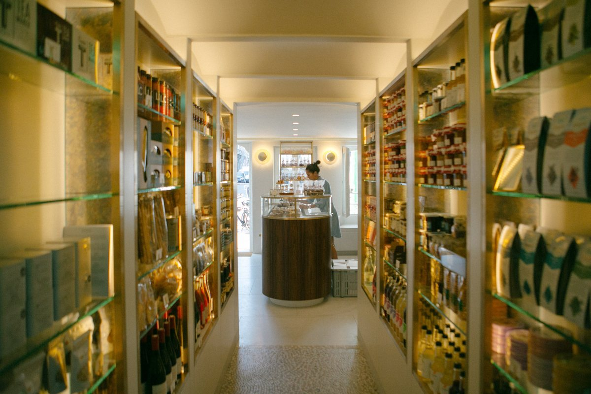
| 営業時間 | ズーレンボルフ本店：火〜日 7:30〜16:00／市中心 Lange Gasthuisstraat 5：火〜土 8:30〜18:00（ハイティーは木〜土）／Markgravelei 95：火・水・木・土 8:00〜16:00、金 8:00〜18:00、日 8:00〜14:00 |
|---|---|
| 定休日 | 月曜（市中心店は日曜・月曜） |
| 住所 | Steenbokstraat 37, 2018 Antwerpen（本店） |
| 予約 | 不要 — ☎ +32 3 239 98 90 ／ 公式サイト |
| 乳児連れ | ベビーカー入店 未確認／ハイチェア 未確認／おむつ替え台 未確認 |
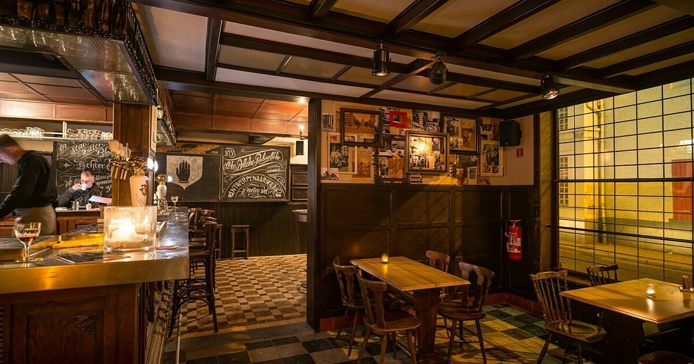
| 営業時間 | ツアー 火〜日 11:00〜（最終入場17:30）／Bar Modeste 火〜木・土・日 11:00〜19:00、金 11:00〜20:00／敷地内Brasserie De Pelgrim 火〜土 11:00〜14:00・17:30〜21:00（日曜休）／Black Smoke ブランチ 土日 12:00〜14:30 |
|---|---|
| 定休日 | 月曜（De Pelgrimは日・月曜休） |
| 住所 | Mechelsesteenweg 291, 2018 Antwerpen |
| 予約 | 推奨 — ☎ +32 3 866 96 90 ／ 公式サイト ／ 予約サイト |
| 乳児連れ | ベビーカー入店 未確認／ハイチェア 未確認／おむつ替え台 未確認 |
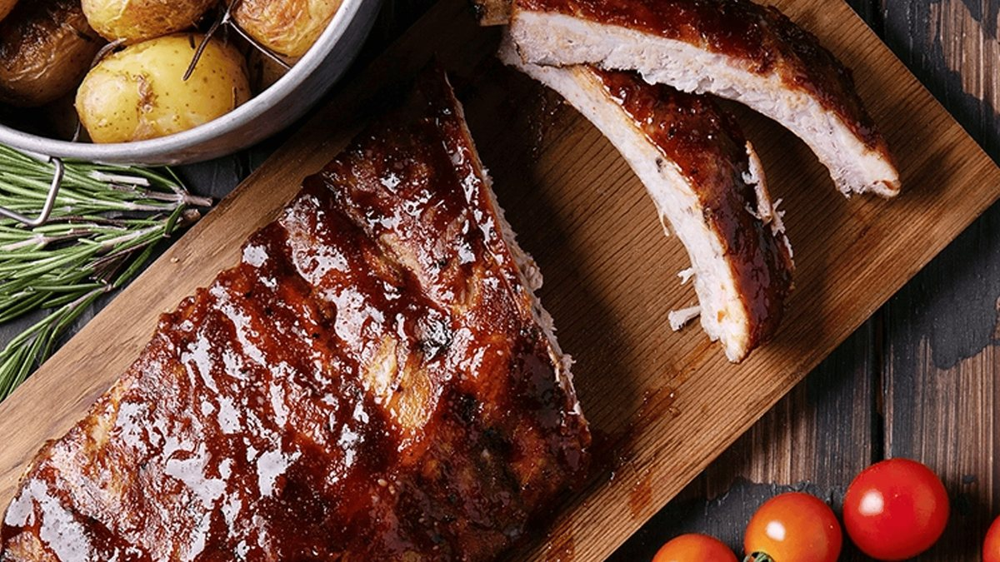
| 営業時間 | 水・木 16:00〜23:00／金・土 12:00〜24:00／日 12:00〜21:00 |
|---|---|
| 定休日 | 月曜・火曜 |
| 住所 | Indiëstraat 21, 2000 Antwerpen |
| 予約 | 可 — ☎ +32 3 293 91 84 ／ 公式サイト ／ 予約サイト |
| 乳児連れ | ベビーカー入店 未確認／ハイチェア 未確認／おむつ替え台 未確認 |
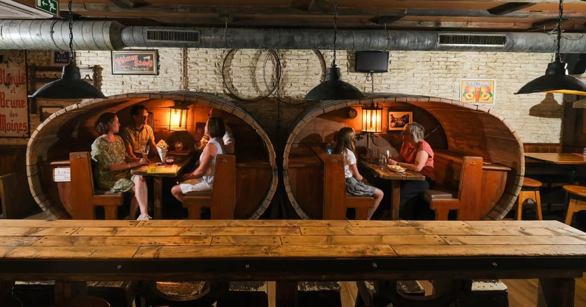
| 営業時間 | 毎日 11:30〜24:00（金・土は翌1:00まで）／キッチン 毎日 12:00〜22:00 通し |
|---|---|
| 定休日 | なし（年中無休。年末は予約不可） |
| 住所 | De Keyserlei 25, 2018 Antwerpen |
| 予約 | 可 — ☎ +32 3 201 59 85 ／ 公式サイト ／ 予約サイト |
| 乳児連れ | ベビーカー入店 未確認／ハイチェア 未確認／おむつ替え台 未確認 |
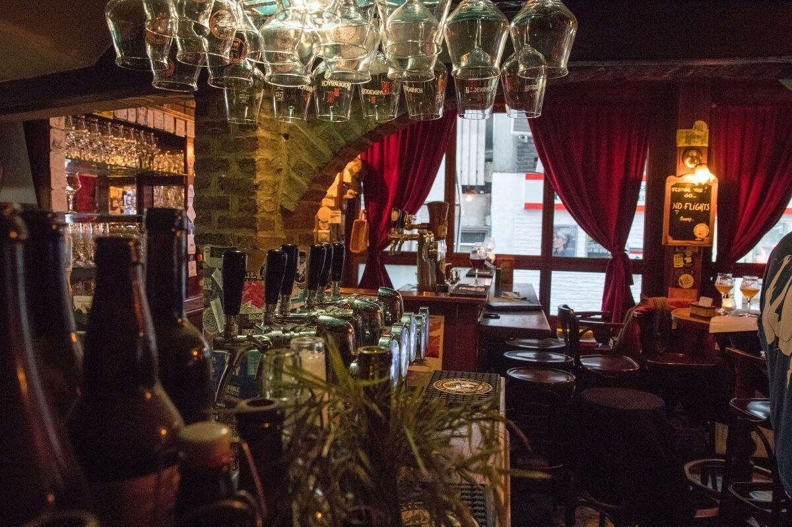
| 営業時間 | 月・水・木 16:00〜24:00／金 16:00〜翌1:00／土 14:00〜翌1:00／日 14:00〜24:00（軽食は午後から、メイン料理は18:00〜、キッチン22:00まで） |
|---|---|
| 定休日 | 火曜 |
| 住所 | Kammenstraat 12, 2000 Antwerpen |
| 予約 | 推奨 — ☎ +32 3 226 31 83 ／ 公式サイト ／ 予約サイト |
| 乳児連れ | ベビーカー入店 未確認／ハイチェア 未確認／おむつ替え台 未確認 |
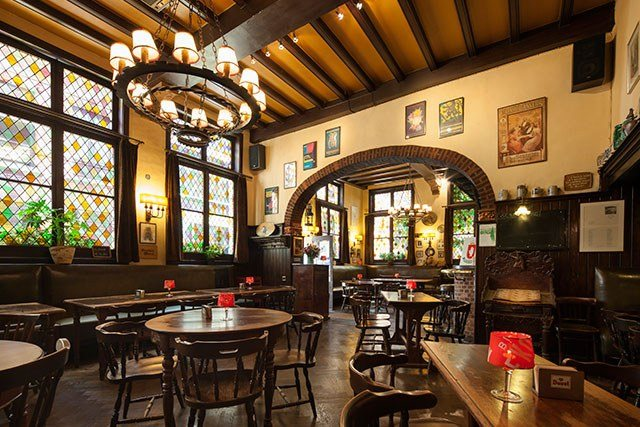
| 営業時間 | 水・木 12:00〜23:00／金・土 12:00〜24:00／日 12:00〜22:00（キッチン〜21:30頃。一部軽食は18:00まで） |
|---|---|
| 定休日 | 月曜・火曜（祝日は営業） |
| 住所 | Moriaanstraat 17, 2000 Antwerpen（Hoofdkerkstraat角） |
| 予約 | 可 — ☎ +32 3 225 01 70 ／ 公式サイト |
| 乳児連れ | ベビーカー入店 未確認／ハイチェア 未確認／おむつ替え台 未確認 |
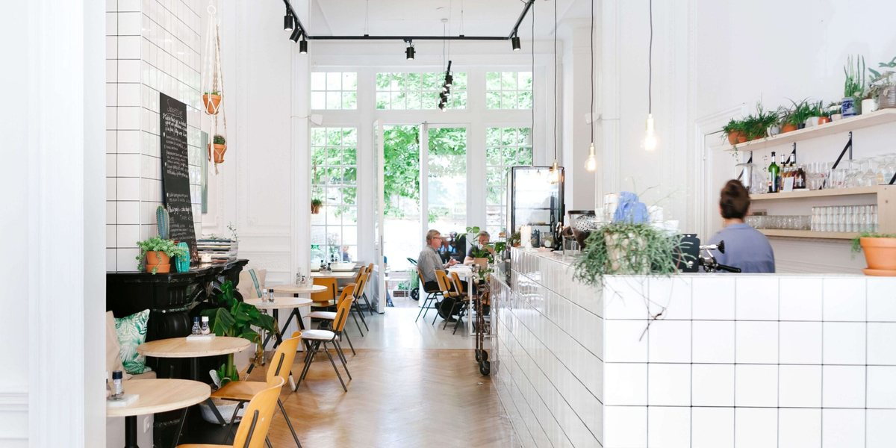
| 営業時間 | 火〜金 8:00〜16:00（新南店は8:30〜）／土日 9:00〜16:00 |
|---|---|
| 定休日 | 月曜 |
| 住所 | Van Bréestraat 6, 2018 Antwerpen（センター店）／Jos Smolderenstraat 70, 2000 Antwerpen（新南店） |
| 予約 | 不可 — ☎ +32 3 501 64 16 ／ 公式サイト |
| 乳児連れ | ベビーカー入店 未確認／ハイチェア 未確認／おむつ替え台 未確認 |
| 営業時間 | 月〜金 8:00〜17:00／土日 9:00〜17:00（キッチンは16:00まで。朝食メニューは8〜11時、日曜は終日） |
|---|---|
| 定休日 | なし（祝日等は公式Instagram確認） |
| 住所 | Belegstraat 31, 2018 Antwerpen |
| 予約 | 不可 — ☎ +32 3 297 63 08 ／ 公式サイト |
| 乳児連れ | ベビーカー入店 未確認／ハイチェア 未確認／おむつ替え台 未確認 |
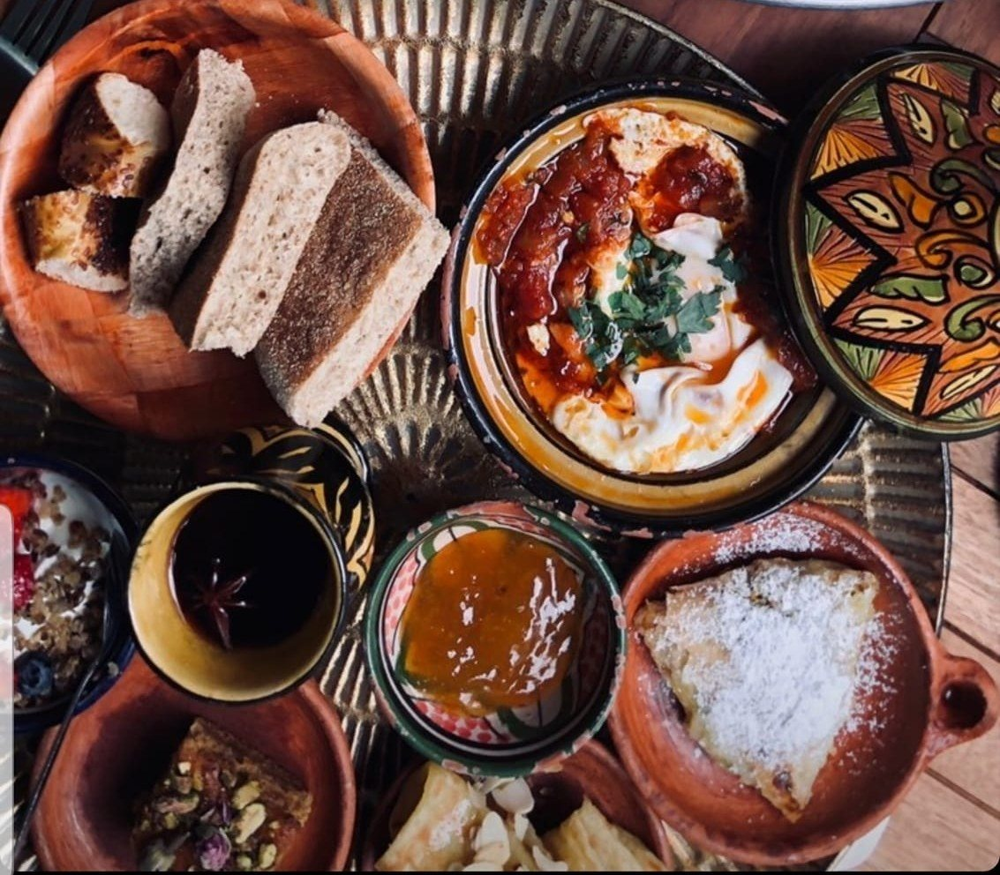
| 営業時間 | 木〜月 9:00〜16:00 |
|---|---|
| 定休日 | 火曜・水曜 |
| 住所 | Draakstraat 21, 2018 Antwerpen |
| 予約 | 要 — ☎ +32 487 11 06 13 ／ 公式サイト ／ 予約サイト |
| 乳児連れ | ベビーカー入店 未確認／ハイチェア 未確認／おむつ替え台 未確認 |
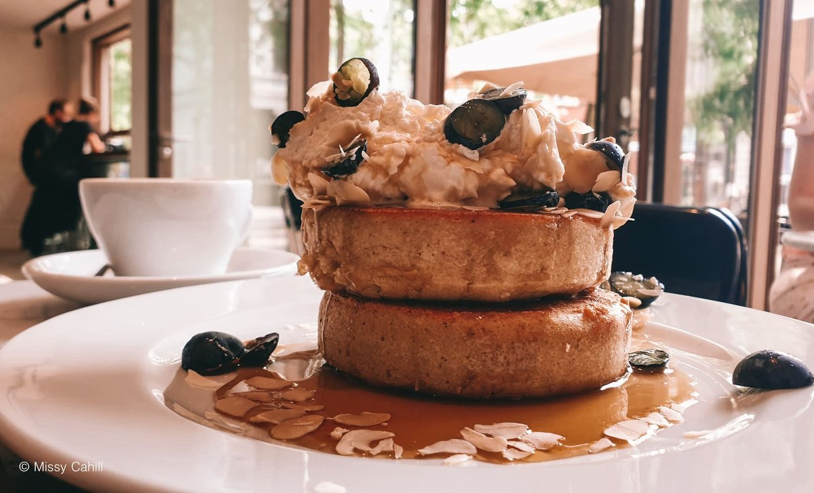
| 営業時間 | 月・水〜金 8:00〜17:00／土日 9:00〜17:00（キッチンは15:00まで） |
|---|---|
| 定休日 | 火曜・祝日 |
| 住所 | Sint-Paulusplaats 30, 2000 Antwerpen |
| 予約 | 不可 — 公式サイト |
| 乳児連れ | ベビーカー入店 未確認／ハイチェア 未確認／おむつ替え台 未確認 |
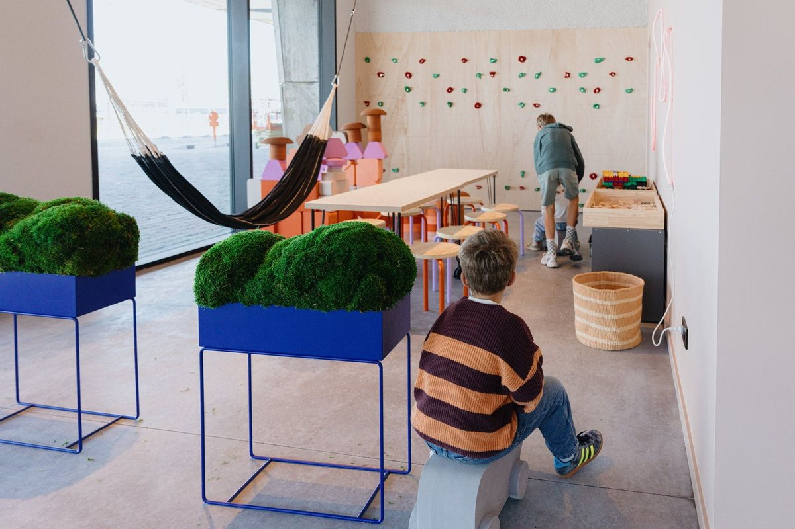
| 営業時間 | 土日 アーリーブランチ 9:00〜11:30／レイトブランチ 13:00〜15:30（オンラインカレンダーで予約枠を確認） |
|---|---|
| 定休日 | 平日（貸切・企業イベントのみ） |
| 住所 | Limastraat 1, 2000 Antwerpen（Montevideo 倉庫） |
| 予約 | 要 — ☎ +32 476 37 52 33 ／ 公式サイト ／ 予約サイト |
| 乳児連れ | ベビーカー入店 未確認／ハイチェア あり／おむつ替え台 あり 出典 |
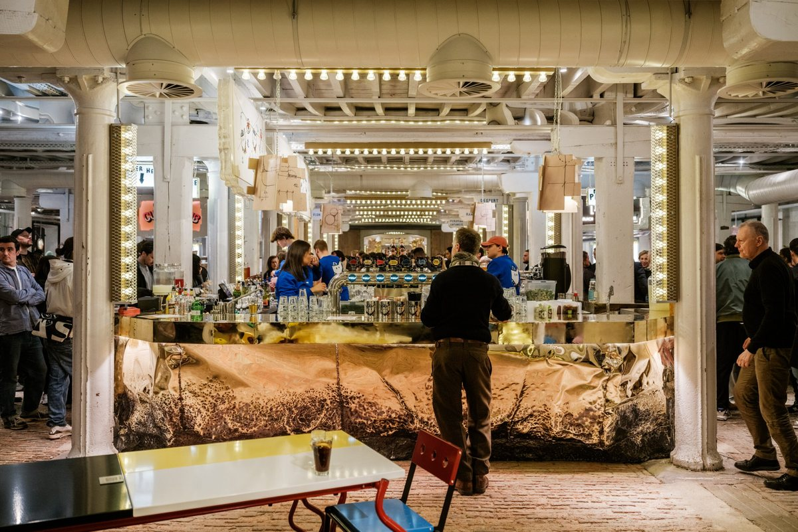
| 営業時間 | 月〜木 12:00〜14:30／17:00〜21:30、金 12:00〜14:30／17:00〜22:00、土 12:00〜22:00、日 12:00〜21:30 |
|---|---|
| 定休日 | なし（年中無休） |
| 住所 | Felix Pakhuis, Godefriduskaai 30, 2000 Antwerpen |
| 予約 | 不要 — 公式サイト ／ 予約サイト |
| 乳児連れ | ベビーカー入店 未確認／ハイチェア 未確認／おむつ替え台 未確認 |
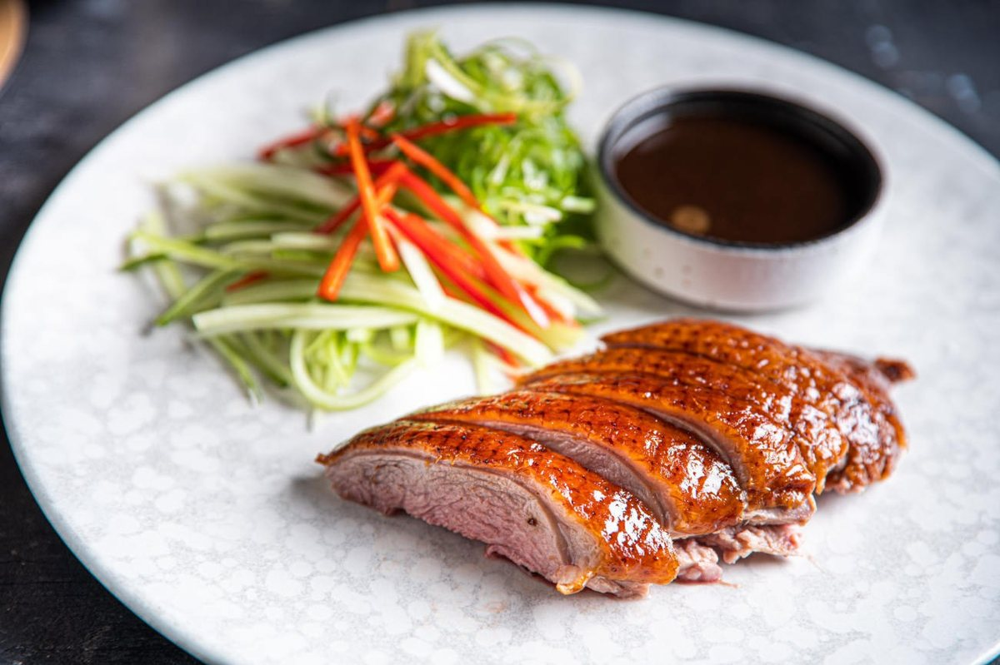
| 営業時間 | ランチ 火・金 12:00〜13:00入店（〜15時頃）／ディナー 火〜土 18:00〜20:30入店（〜23時頃） |
|---|---|
| 定休日 | 日曜・月曜 |
| 住所 | Draakplaats 3, 2018 Antwerpen |
| 予約 | 推奨 — ☎ +32 3 289 92 45 ／ 公式サイト |
| 乳児連れ | ベビーカー入店 未確認／ハイチェア 未確認／おむつ替え台 未確認 |
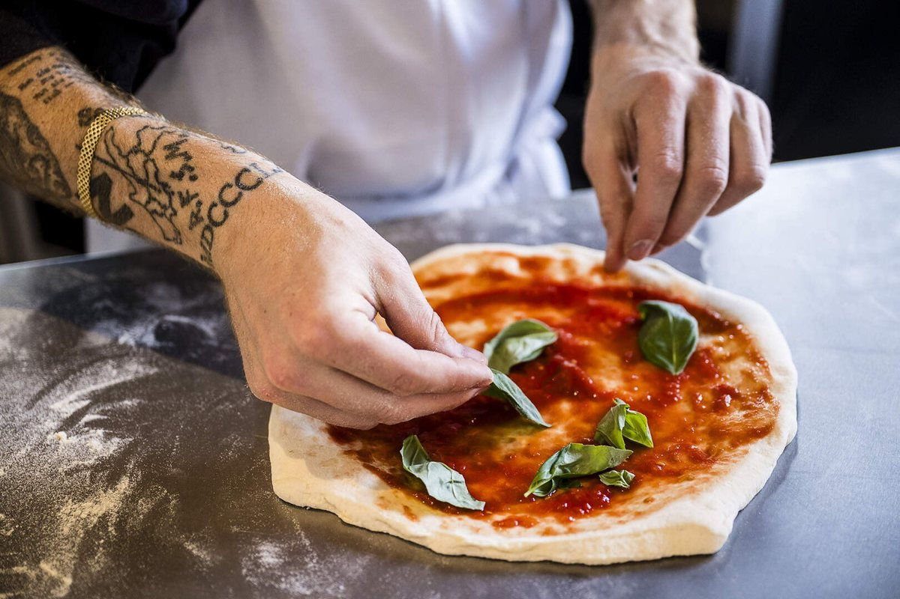
| 営業時間 | 木〜日 17:00〜22:00 |
|---|---|
| 定休日 | 月曜〜水曜 |
| 住所 | Generaal Lemanstraat 54, 2600 Antwerpen (Berchem) |
| 予約 | 推奨 — ☎ +32 469 25 85 03 ／ 公式サイト ／ 予約サイト |
| 乳児連れ | ベビーカー入店 未確認／ハイチェア 未確認／おむつ替え台 未確認 |
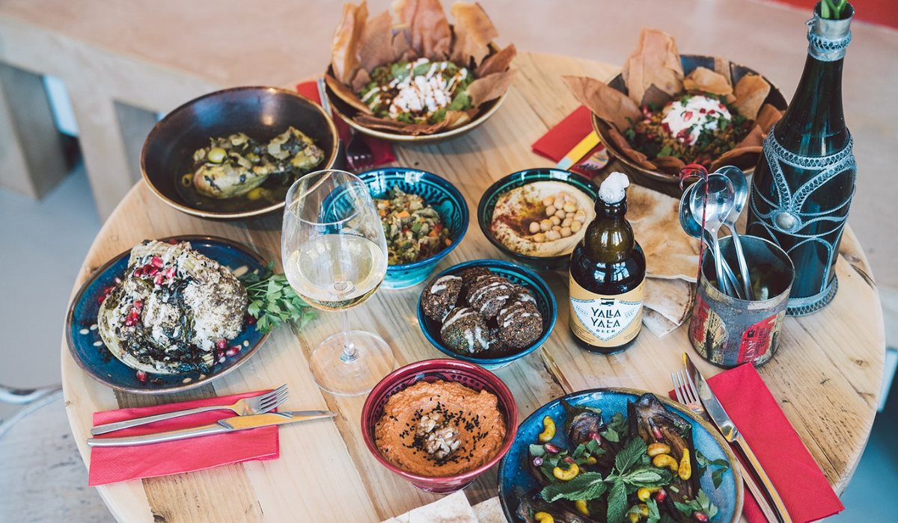
| 営業時間 | 毎日 18:00〜22:00（公式サイトに「11月1日から毎週日曜ブランチビュッフェ」の告知あり。年は未確認） |
|---|---|
| 定休日 | なし |
| 住所 | Tramplein 2, 2600 Antwerpen (Berchem) |
| 予約 | 推奨 — ☎ +32 468 30 82 90 ／ 公式サイト ／ 予約サイト |
| 乳児連れ | ベビーカー入店 未確認／ハイチェア 未確認／おむつ替え台 未確認 |
本ガイドは個人利用目的で作成。掲載情報は2026年9月時点の調査に基づく。写真出典: 各店の公式サイト・Visit Antwerpen・現地メディア・在住者ブログ（各カードの「写真:」に出典を記載）